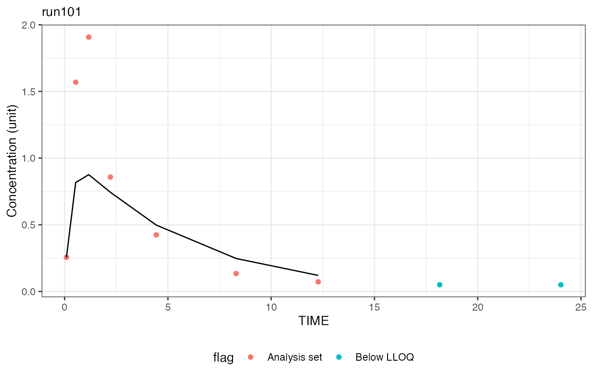

![logo]()
Built 2023-06-12 using NMdata 0.0.17.904.
Please make sure to see latest version available here.
This cheat sheet is intented to provide an overview and remind of command names. Please refer to other vignettes for more details on specific topics and individual manual pages for details on the functions.
The order of the contents loosely follows a workflow example (except for the configuration part). The steps can be applied in any order and independently from each other.
Get started
install.packages("NMdata")
library(NMdata)Data preparation
We have read some source data files and need to combine them into one
data set for NONMEM. Key steps are stacking data sets (like doses,
samples, and simulation records) and adding additional information such
as covariates. We often use rbind and merge or join
operations for these steps. NMdata helps explore how to do these steps
and ensure that merge/join results are as expected.
compareCols - Compare presence and classes of columns
across data sets before merging or stacking.
compareCols(covs,covs2)
#> Dimensions:
#> data nrows ncols
#> 1: covs 150 2
#> 2: covs2 150 2
#>
#> Columns that differ:
#> column covs covs2
#> 1: WEIGHTB numeric <NA>
#> 2: race <NA> character
#>
#> Columns where no differences were found: ID.Use the cols.wanted argument for the overview to
especially focus on the columns you need in your final data set.
mergeCheck(x,y,...) - Merges data and only accept
results if all that happened was that columns from y were
added to x. Row order of x is retained.
Arguments are passed to data.table which does the actual merge. This
completely automates the necessary checks when say merging covariates
onto data.
pk2 <- mergeCheck(pk,covs2,by="ID")
#> Column(s) added: raceWe did not get an error from mergeCheck so we know that
the rows in pk2 are exactly identical to those in
pk, except the addition of a column called
cov2. If rows duplicate or disappear
mergeCheck does a good job telling you where in data to
address the issues.
renameByContents - Keep track of what columns are
compatible with NONMEM by renaming columns accordingly.
NMisNumeric evaluates whether NONMEM can interpret contents
as numeric (different from is.numeric):
## Example 1: Append an "N" to columns that NONMEM _can_ read (as numeric)
pk <- renameByContents(data=pk,
fun.test = NMisNumeric,
fun.rename = function(x)paste0(x,"N"))
## Example 2: lowercase names of columns that NONMEM _cannot_ read
pk <- renameByContents(data=pk,
fun.test = NMisNumeric,
fun.rename = tolower,
invert.test = TRUE)addTAPD - Add time since previous dose to data, time of
previous dose, most recent dose amount, cumulative number of doses, and
cumulative dose amount based on time since first dose. It supports
repeated dosing defined in ADDL and II.
flagsAssign - Sequentially assign exclusion flags to a
dataset based on a set of user-specified exclusion criteria.
flagsCount - Create an overview of number of retained
and discarded datapoints.
Example with only two exclusion flags applied to samples. If time is
negative, we assign exclusion flag FLAG=100. If (time is
non-negative and) BLQ==1 we assign FLAG=10. If
none of these conditions are met, FLAG=0, and the row is to
be included in the analysis. (fread is just for row-wise
readability.)
dt.flags <- fread(text="FLAG,flag,condition
10,Below LLOQ,BLQ==1
100,Negative time,TIME<0")
pk <- flagsAssign(pk,tab.flags=dt.flags,subset.data="EVID==0")
#> Coding FLAG = 100, flag = Negative time
#> Coding FLAG = 10, flag = Below LLOQ
pk <- flagsAssign(pk,subset.data="EVID==1",flagc.0="Dosing")
flagsCount(pk[EVID==0],tab.flags=dt.flags)[,.( flag, N.left, Nobs.left, N.discard, Nobs.discard)]
#> flag N.left Nobs.left N.discard Nobs.discard
#> 1: All available data 150 1352 NA NA
#> 2: Negative time 150 1350 0 2
#> 3: Below LLOQ 131 755 19 595
#> 4: Analysis set 131 755 NA NAYou may also want to apply a couple of exclusion criteria to dose
records (for missing time, zero or missing amounts?) by modifying the
steps above and applying to EVID==1.
NMorderColumns - Standardize column order. Columns that
can be read by NONMEM are prioritized. Row identifier and standard
column names have special priorities.
NMcheckData - Extensive data checks for NONMEM
compatibility and common issues. Should be run before saving data but
see the “Debugging…” section for example on output.
Write data and update NONMEM control streams accordingly
NMwriteData - Write data ensuring compatibility with
NONMEM. By defaults saves both a csv (for NONMEM) and an rds (for R,
retaining factor levels etc). Text for optional use in
$INPUT and $DATA NONMEM sections is returned.
script and args.stamp are optional arguments,
see “Traceability” section for their purpose.
text.nm <- NMwriteData(pk,file="derived/pkdata.csv",script="NMdata-cheat.Rmd",args.stamp=list(Description="PK data for the NMdata Cheatsheet"))
#> For NONMEM:
#> $INPUT ROW ID NOMTIME TIME EVID CMT AMT DV FLAG STUDY BLQ CYCLE DOSE
#> PART PROFDAY PROFTIME eff0
#> $DATA derived/pkdata.csv
#> IGN=@
#> IGNORE=(FLAG.NE.0)
#> Data written to file(s):
#> derived/pkdata.csv
#> derived/pkdata.rdsNMwriteSection - Replace sections of a NONMEM control
stream. Can use the text generated by NMwriteData to update
NONMEM runs to match the newly generated input data. Update INPUT
section (and not DATA) for all control streams in directory “nonmem”
which file names start with “run1” and end in “.mod” (say “run101.mod”
to “run199.mod”):
NMwriteSection(dir="nonmem",
file.pattern="run1.*\\.mod",
list.sections=text.nm["INPUT"])NMwriteSection has the argument data.file
to further limit the scope of files to update based on what data file
the control streams use. It only makes sense to use the auto-generated
text for control streams that use this data set.
The text for NONMEM is generated by NMgenText. Use that
to generate alternative $INPUT sections (e.g. for models
that use other columns as dependent variables) without saving data
again. You can tailor the generation of the text to copy
(DV=CONC), drop (COL=DROP), rename
(DV instead of CONC) and more.
Debugging input data (and control stream)
NMcheckData can check a data.frame.
However, it can also be run on a path to a control stream, in which case
it provides a full check of how data is read by NONMEM and then checks
the data as read by NONMEM. It checks column names in INPUT
section against data and then runs a full check of the data set as read
by NONMEM (according to column names in $INPUT and ACCEPT/IGNORE
statements in $DATA). We suppress the default print to terminal
(quiet=T) and provide selected parts of the results
here.
res.debug <- NMcheckData(file="nonmem/run201.mod",quiet=T)
## we will only show some of what is available here
names(res.debug)
#> [1] "datafile" "tables" "dataCreate" "input.filters"
#> [5] "input.colnames" "NMcheckData"
## Meta data on input data file:
res.debug$tables
#> source name nrow ncol nid filetype file.mtime
#> 1: input pkdata.csv 1502 23 150 text 2023-06-12 19:51:17
#> file.logtime file has.col.row
#> 1: 2023-06-12 19:51:17.479867 nonmem/../derived/pkdata.csv TRUE
#> has.col.id
#> 1: TRUEIn this model we forgot to update the control stream INPUT section after adding a column to data (“off” means that INPUT text can be reorganized to match data file better):
## Comparison of variable naming:
res.debug$input.colnames[c(1:2)]
#> datafile INPUT nonmem result compare
#> 1: ROW ROW ROW ROW OK
#> 2: ID ID ID ID OK
res.debug$input.colnames[c(9:12)]
#> datafile INPUT nonmem result compare
#> 1: FLAG FLAG FLAG FLAG OK
#> 2: STUDY BLQ BLQ BLQ off
#> 3: BLQ CYCLE CYCLE CYCLE off
#> 4: CYCLE DOSE DOSE DOSE offWe have some findings on the data set too. But since
res.debug$input.colnames tells us we are reading the data
incorrectly, we have to address that before interpreting findings on the
data.
res.debug$NMcheckData$summary
#> column check N Nid
#> 1: EVID Subject has no obs 19 19
#> 2: MDV Column not found 1 0If you are preparing a data set, run NMcheckData
directly on the data (using the data argument) instead of
on a control stream.
Retrieve NONMEM results
NMscanData - Automatically find NONMEM input and output
tables and organize data. By default, available column names are taken
from the NONMEM control stream. Additional column names (columns not
read by NONMEM) are taken from input data file.
res1 <- NMscanData("nonmem/run101.lst")
#> Model: run101
#>
#> Used tables, contents shown as used/total:
#> file rows columns IDs
#> run101_res.txt 905/905 7/7 150/150
#> run101_res_vols.txt 905/905 3/7 150/150
#> run101_res_fo.txt 150/150 1/2 150/150
#> pkdata.rds (input) 905/1502 20/23 150/150
#> (result) 905 31+2 150
#>
#> Input and output data merged by: ROW
#>
#> Distribution of rows on event types in returned data:
#> EVID CMT output result
#> 0 2 755 755
#> 1 1 150 150
#> All All 905 905The following plot serves to illustrate that the obtained data set
combines output tables (PRED is from a $TABLE statement)
with input data (exclusion flags are represented as character
variables). Moreover, the “below LLOQ” samples are included in the
result even though they were not in the analysis (excluded using
IGNORE in control stream, recovered in
NMscanData using recover.rows=TRUE)
## Recover rows that were not read by NONMEM (due to ACCEPT/IGNORE)
res2 <- NMscanData("nonmem/run101.lst",recover.rows=TRUE)
#> Model: run101
#>
#> Used tables, contents shown as used/total:
#> file rows columns IDs
#> run101_res.txt 905/905 7/7 150/150
#> run101_res_vols.txt 905/905 3/7 150/150
#> run101_res_fo.txt 150/150 1/2 150/150
#> pkdata.rds (input) 1502/1502 20/23 150/150
#> (result) 1502 31+2 150
#>
#> Input and output data merged by: ROW
#>
#> Distribution of rows on event types in returned data:
#> EVID CMT input-only output result
#> 0 1 2 0 2
#> 0 2 595 755 1350
#> 1 1 0 150 150
#> All All 597 905 1502
library(ggplot2)
res2.plot <- subset(res2,ID==135&EVID==0)
ggplot(res2.plot,aes(TIME))+
geom_point(aes(y=DV,colour=flag))+
geom_line(aes(y=PRED))+
labs(y="Concentration (unit)",subtitle=unique(res2$model))
#> Warning: Removed 2 rows containing missing values (`geom_line()`).
Read the messages from NMwriteData and
NMscanData carefully and notice that an rds file was
written and read. This bypasses the loss of information caused by
writing and reading csv, and so we have kept factor levels from the
input data we generated:
levels(res1$trtact)
#> [1] "Placebo" "3 mg" "10 mg" "30 mg" "100 mg" "300 mg"Configuration
Use the many options in NMdataConf to tailor NMdata
behaviour to your setup and preferences. Make NMdata functions return
data.tables or tibbles:
NMdataConf(as.fun=tibble::as_tibble)
NMdataConf(as.fun="data.table")By default, NMdata functions will look for a unique row identifier in
columns called ROW. If you call this column
REC, do
NMdataConf(col.row="REC")By default, NMdata is configured to read files from PSN in which case the input control stream is needed to find the input data. Do this if you don’t use PSN:
NMdataConf(file.mod=identity)Loosely speaking, NMdataConf changes default values of
NMdata function arguments. Many options can be configured this way so
you don’t have to remember to type in those arguments every time you
call an NMdata function.
Traceability
NMinfo - Get metadata from an NMdata object. This will
show where and when input data was created, when model was run, results
of consistency checks, what tables were read, how they were combined and
a complete list of data columns and their origin.
A list of the available elements:
names(NMinfo(res1))
#> [1] "details" "datafile" "dataCreate" "input.colnames"
#> [5] "tables" "columns"The information recorded during saving of the input data:
NMinfo(res1,"dataCreate")
#> $DataCreateScript
#> [1] "NMdata-cheat.Rmd"
#>
#> $CreationTime
#> [1] "2023-06-12 19:51:17 UTC"
#>
#> $writtenTo
#> [1] "derived/pkdata.rds"
#>
#> $Description
#> [1] "PK data for the NMdata Cheatsheet"A full list of columns in all columns in output and input data is
included. The source data file and the column number in the result
(COLNUM) are listed.
NMinfo(res1,"columns")[1:8]
#> variable file source level COLNUM
#> 1: ROW run101_res.txt output row 1
#> 2: ID run101_res_vols.txt output row 2
#> 3: NOMTIME pkdata.rds input row 3
#> 4: TIME pkdata.rds input row 4
#> 5: EVID pkdata.rds input row 5
#> 6: CMT pkdata.rds input row 6
#> 7: AMT pkdata.rds input row 7
#> 8: DV run101_res.txt output row 8We saw earlier that we got “30+2” columns back. We see that the
additional two were added by NMscanData (source).
DV was already included from another table so the redundant
DV column is omitted.
NMinfo(res1,"columns")[30:33]
#> variable file source level COLNUM
#> 1: flag pkdata.rds input row 30
#> 2: trtact pkdata.rds input row 31
#> 3: model <NA> NMscanData model 32
#> 4: nmout <NA> NMscanData row 33Additional functions to read (NONMEM) data files
NMscanTables - Find and read all output data tables
based on a NONMEM control stream file. A list of tables is returned.
NMreadTab - Read an output table file from NONMEM based
on path to output data file
NMscanInput - Read input data based on NONMEM control
stream and optionally translate column names according to the
$INPUT NONMEM section
NMreadCsv - Read input data formatted for NONMEM